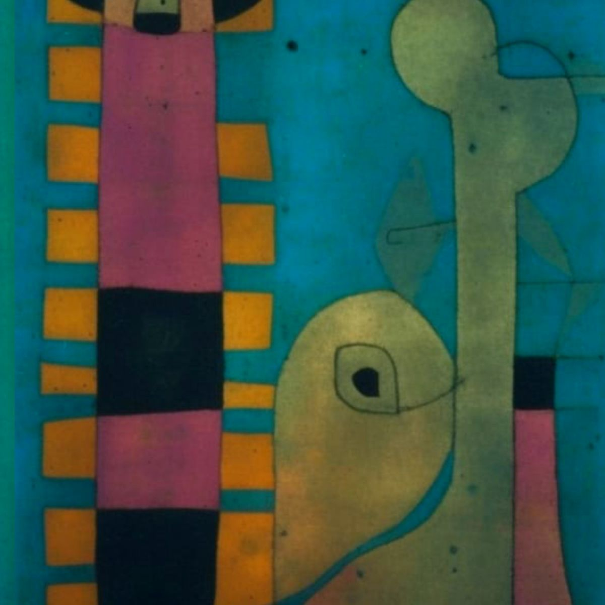
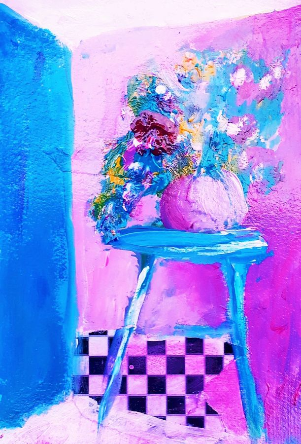

Linda A. Lavid & Mrs. Plum’s Art Emporium
A little color.
A little mystery.
A world to explore.
Welcome to my corner of the creative world. Come for the art, stay for a story, and find something that sparks an idea of your own.

Seven collections to explore. Free digital art for personal, non-commercial use.
The art collections
Follow your curiosity.
From quiet moments to colorful characters. Find a collection that speaks to you.
Abstract
Geometric forms, rich color, and playful lines. An invitation to look a little longer.

Journal
Mixed-media explorations and everyday discoveries, with room for your own imagination.

And You Are?
Collage, ink, and watercolor portraits exploring the many facets of identity.

Characters
An affectionate cast of personalities, where a writer’s imagination meets watercolor.

Bistro
Expressive color, intimate interiors, and the pleasure of seeing ordinary things anew.

Cats
The cats that helped begin a painting adventure. Snowmen with points on their heads? Perhaps.
Crossing Thresholds
An exploration of AI imagery, imagination, and the many places creativity can take us.
On the bookshelf
Stories live here, too.
Mysteries, fiction, and books for a creative life. Step into the other side of my imagination and find your next read.
A face in a painting.
There’s always another
story waiting.
From the studio
Come see what
happens next.
The fun is in the making: an unexpected color, a wandering line, a painting that takes a turn of its own. Join me on YouTube for art, ideas, and a look at the creative process.